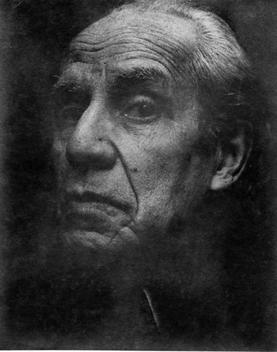

DO - DO# - RE - RE# - MI - FA - FA# - SOL - SOL# - LA - LA# - SI
El dodecafonismo
El dodecafonismo o música dodecafónica; La gran mayoría de la música occidental está compuesta sobre una estructura llamada sistema tonal que regula las relaciones entre las notas de una escala y los acordes que de ella emergen. El sistema se organiza en torno a una nota que será llamada tónica y dará nombre a la tonalidad, la cual podrá ser mayor o menor (Do Mayor o Mi menor por ejemplo). El dodecafonismo propone en sus reglas la igualdad de todas las notas comprendidas en una octava, eliminando la tónica como nota más importante en torno a la cual se ordenan el resto de los sonidos. Históricamente, procede de manera directa del «atonalismo libre», y surge de la necesidad que había a principios del siglo XX de organizar coherentemente las nuevas posibilidades de la música y enfocarla a las sensibilidades emergentes. Como regla fundamental no se repite ningún sonido hasta que hayan sonado todos los otros tonos.
Arnold Schönberg, creador de la técnica dodecafónica. (Foto: Florence Homolka)
Segunda Escuela de Viena
Slide 2. El dodecafonismo o música dodecafónica; La gran mayoría de la música occidental está compuesta sobre una estructura llamada sistema tonal que regula las relaciones entre las notas de una escala y los acordes que de ella emergen. El sistema se organiza en torno a una nota que será llamada tónica y dará nombre a la tonalidad, la cual podrá ser mayor o menor (Do Mayor o Mi menor por ejemplo). El dodecafonismo propone en sus reglas la igualdad de todas las notas comprendidas en una octava, eliminando la tónica como nota más importante en torno a la cual se ordenan el resto de los sonidos. Históricamente, procede de manera directa del «atonalismo libre», y surge de la necesidad que había a principios del siglo XX de organizar coherentemente las nuevas posibilidades de la música y enfocarla a las sensibilidades emergentes. Como regla fundamental no se repite ningún sonido hasta que hayan sonado todos los otros tonos.
Alban Berg y Anton Webern, discípulos de Schönberg (Foto: Alban Berg Stiftung)
Dodecafonismo latinoamericano
Slide 3. El dodecafonismo o música dodecafónica; La gran mayoría de la música occidental está compuesta sobre una estructura llamada sistema tonal que regula las relaciones entre las notas de una escala y los acordes que de ella emergen. El sistema se organiza en torno a una nota que será llamada tónica y dará nombre a la tonalidad, la cual podrá ser mayor o menor (Do Mayor o Mi menor por ejemplo). El dodecafonismo propone en sus reglas la igualdad de todas las notas comprendidas en una octava, eliminando la tónica como nota más importante en torno a la cual se ordenan el resto de los sonidos. Históricamente, procede de manera directa del «atonalismo libre», y surge de la necesidad que había a principios del siglo XX de organizar coherentemente las nuevas posibilidades de la música y enfocarla a las sensibilidades emergentes. Como regla fundamental no se repite ningún sonido hasta que hayan sonado todos los otros tonos.

Juan Carlos Paz, compositor dodecafonista argentino.